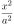
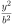
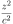
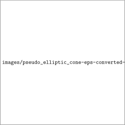

Next: Derivation of a 2D Up: Pseudo-ellipse frame order model Previous: Pseudo-ellipse frame order model Contents Index
To extend to the next level of motional complexity above the isotropic cone models, an anisotropic cone can be modelled. This cone is defined via the ball and socket joint pivoted mechanics with an angular restriction in all three angles. The simplest anisotropic distribution would be to create an ellipse using the standard quadric surface formula for an elliptic cone
|  +  -  = 0. | (16.38) |
Let the two cone opening half-angles of the ellipse be θx and θy. For a sphere of radius z = 1 and using the tilt angles θ and φ, a boundary polar angle θmax can be modelled as
As the quadric constants a, b and c are angles rather than axis lengths, this is not a true ellipse. It will therefore instead be called a pseudo-ellipse. The form of this pseudo-elliptic cone is shown in figure 16.13.
|

|
The model consists of the average domain position, a single pivot point, the full motional eigenframe, and the maximum cone opening and torsion half-angles
 |
where Pi are the average domain position translations and rotations, Ei are the Euler angles defining the motional eigenframe, pi are the coordinates of the pivot point, θx and θy are the maximum cone opening half-angles, and σmax is the torsion half-angle.